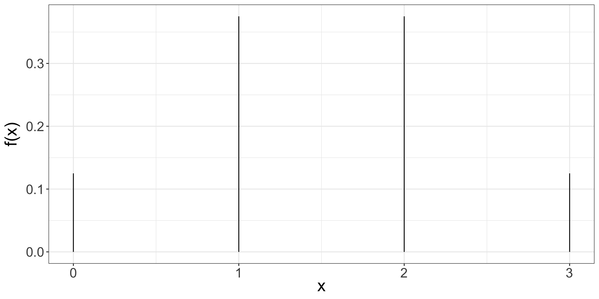
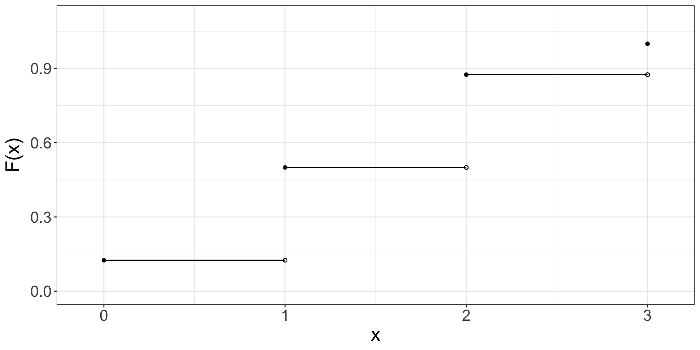

Discrete Random Variables
Random Variables
A numeric outcome of a random process is called a random variable.
A discrete random variable has a finite or countably infinite number of possible outcomes.
We will use capital letters towards the end of the alphabet such as \(X, Y, Z\) to represent random variables.
We will use the corresponding lower case letters \(x, y, z\) to represent observed outcomes.
Example
Let X be the random variable that represents the number of heads in a single coin flip.
\(x \in \{0, 1\}\) where 0 indicates the outcome was tails and 1 indicates heads. Since the sample space is finite, X is a discrete random variable.
Example
Random process: 3 flips of a single coin
Sample Space: \(\{HHH, HHT, HTH, THH, HTT, THT, TTH, TTT\}\)
Let X be a discrete random variable that represents the total number of heads in 3 coin flips.
Example
Let \(X\) be the proportion of correct responses on a test with 100 questions. \(\Omega_x = \{0.00,0.01,0.02,...,0.98, 0.99, 1.00\}\). The sample space is finite. Note that the elements of the sample space is not integers.
Example
Let \(X\) be the number of times you roll a die until you get a 6. \(\Omega_x = \{1,2,3,4,5,6,7,8,...\}\) The sample space is countably infinite.
Discrete Random Variable
| x | 0 | 1 | 2 | 3 |
| P(X=x) = f(x) | 0.125 | 0.375 | 0.375 | 0.125 |
\(P(X = 2) =f(2)=\frac{3}{8} = 0.375\)
Probability Mass Function
For discrete random variable, \(X\) the distribution of all possible values of \(x\) can be shown with a probability mass function (pmf).
Probability Mass Function (pmf)
| x | 0 | 1 | 2 | 3 |
| P(X=x) = f(x) | 0.125 | 0.375 | 0.375 | 0.125 |
\(P(X = 2) =f(2)=\frac{3}{8} = 0.375\)
Cumulative Distribution Function (cdf)
| x | 0 | 1 | 2 | 3 |
| P(X ≤x) = F(x) | 0.125 | 0.5 | 0.875 | 1 |
\(P(X \leq 2) =F(2)= f(0) + f(1) + f(2) = \frac{7}{8} = 0.875\)
Cumulative Distribution Function
Expected Value
If we repeat this random process of 3 coin flips many times, how many number of heads would we expect to see on average?
| x | 0 | 1 | 2 | 3 |
| P(X=x) = f(x) | 0.125 | 0.375 | 0.375 | 0.125 |
\(E(X) = \sum_{S} x f(x)\)
\(E(X) = (0\cdot 0.125) + (1\cdot 0.375) + (2\cdot 0.375) + (3\cdot 0.125)\)
\(E(X) = \mu = 1.5\)
Variance
Variance is the average squared deviation from the average.
Variance
Variance is the average squared deviation from the average.
Variance is the expected squared deviation from the expected value.
\[Var(X)= E[(X-E(X))^2]\]
\[Var(X)= E[(X-\mu)^2]\]
\[Var(X)= E(X^2) - [E(X)]^2\]
Variance
| x | 0 | 1 | 2 | 3 |
| P(X=x) = f(x) | 0.125 | 0.375 | 0.375 | 0.125 |
\(Var(X)= E(X^2) - [E(X)]^2\)
\(E(X^2) = \sum_{S} x^2 f(x)\)
\(E(X^2) = (0^2\cdot 0.125) + (1^2\cdot 0.375) + (2^2\cdot 0.375) + (3^2\cdot 0.125) = 3\)
\(Var(X)= 3 - 1.5^2 = 0.75\)
Vectorized Operations in R
Scenario 1
You are playing an amazing game where you always win. Host of the game makes you draw a banknote from a bag that has exactly four banknotes, $1, $5, $10, and $50.
What is the expected value of earning in this game?
\(1\cdot \frac{1}{4}+ 5\cdot \frac{1}{4} +10\cdot \frac{1}{4} + 50\cdot \frac{1}{4} = 16.5\)
Scenario 2
You are playing an amazing game where you always win. Host of the game makes you draw a banknote from a bag that has exactly five, $1, $5, $10, and 2 of $50. What is the expected value of earning in this game?
\(1\cdot \frac{1}{5}+ 5\cdot \frac{1}{5} +10\cdot \frac{1}{5} + 50\cdot \frac{2}{5} = 23.2\)
Scenario 3
You are playing an amazing game where you always win. Host of the game makes you draw a banknote from a bag that has exactly four banknotes, $2, $10, $20, and $100. The amounts on the banknotes are exactly the double of what we have seen in the first scenario. What is the expected value of earning in this game?
\(2\cdot \frac{1}{4}+ 10\cdot \frac{1}{4} +20\cdot \frac{1}{4} + 100\cdot \frac{1}{4}\) or even better \(2\times[1\cdot \frac{1}{4}+ 5\cdot \frac{1}{4} +10\cdot \frac{1}{4} + 50\cdot \frac{1}{4}] = 2\times[16.5]\)
What we have seen is that
\(E(2X) = 2 E(X)\)
To generalize:
\(E(aX) = a\cdot E(X)\) where \(X\) represents a random variable and \(a\) represents a constant.
Scenario 1
You are playing an amazing game where you always win. Host of the game makes you draw a banknote from a bag that has exactly four banknotes $1, $5, $10, $50. Recall that \(E(X) = 16.5\).
Would you always expect to win $16.5?
What is the variance of earning in the first scenario?
\(E(X^2) = 1^2\cdot \frac{1}{4}+ 5^2\cdot \frac{1}{4} +10^2\cdot \frac{1}{4} + 50^2\cdot \frac{1}{4} = 656.5\)
\(Var(X) = E(X^2) - [E(X)]^2\)
\(Var(X) = 656.5 - 16.5^2 = 384.25\)
Scenario 3
Four banknotes, $2, $10, $20, and $100. The amounts on the banknotes are exactly the double of what we have seen in the first scenario. What is the variance of earning in this game? Recall in this scenario that the expected value was \(E(2X) = 2 \cdot16.5 = 33\) and \(Var(X) = 384.25\)
\(E(2X^2) = 2^2\cdot \frac{1}{4}+ 10^2\cdot \frac{1}{4} +20^2\cdot \frac{1}{4} + 100^2\cdot \frac{1}{4} = 2626\)
\(Var(2X) = E((2X)^2) - [E(2X)]^2\)
\(Var(2X) = 2626 - 33^2 = 1537\)
What we have seen is that
\(Var(2X) = 2^2 Var(X) = 2^2 384.25 = 1537\)
To generalize:
\(Var(aX) = a^2\cdot Var(X)\) where \(X\) represents a random variable and \(a\) represents a constant.
Linear Combination of Random Variables
Let \(X\) and \(Y\) represent random variables and \(a\) and \(b\) represent constants. Then
\(E(aX +bY) = a\cdot E(X) + b \cdot E(Y),\)
and, if \(X\) and \(Y\) are independent,
\(Var(aX +bY) = a^2\cdot Var(X) + b^2 \cdot Var(Y)\)